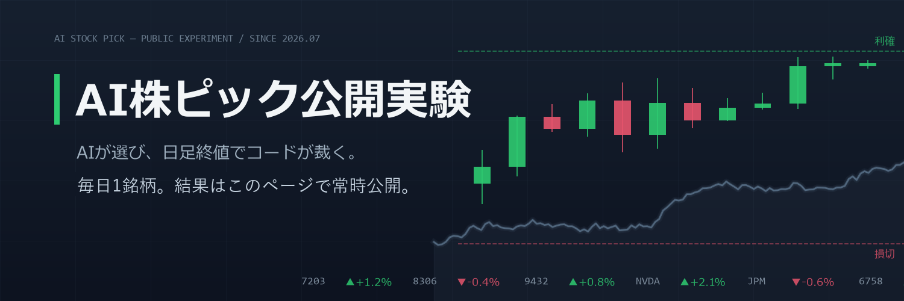

| 期間 | 宣言 | 決着 | 実現損益 |
|---|---|---|---|
| 今月（9月） | 20 | 21利確1／損切20 | -70,982円（-3.1%） |
| 累計（2026-07-06〜） | 100 | 41利確14／損切27 | +78,356円（+1.3%） |
| 月 | 宣言 | 決着 | 利確 | 損切 | 勝率 | 平均損益 | 月間合計 |
|---|---|---|---|---|---|---|---|
| 2026-09 | 20 | 21 | 1 | 20 | 5% | -4.1% | -85.5% |
| 2026-08 | 41 | 15 | 9 | 6 | 60% | +3.0% | +45.6% |
| 2026-07 | 39 | 5 | 4 | 1 | 80% | +6.4% | +32.0% |
| 宣言日 | 銘柄 | 推移 | E | 利確 | 損切 | RR | 終値/決済値 | 状態 | 損益 |
|---|---|---|---|---|---|---|---|---|---|
| 2026-09-16 | サンドラッグ（9989.T） | 3,700 | 3,890 | 3,590 | 1.73 | 3,546 | 監視中 | — | |
| 2026-09-15 | American Electric Power（AEP） | 123 | 128.5 | 119.5 | 1.57 | 118.20 | 不成立 | — | |
| 2026-09-14 | 三菱ＨＣキャピタル（8593.T） | 1,375 | 1,450 | 1,325 | 1.50 | 1,325 | 損切 | -3.6% | |
| 2026-09-11 | 味の素（2802.T） | 5,000 | 5,400 | 4,750 | 1.60 | 4,978 | 建玉 | -0.4% | |
| 2026-09-11 | Republic Services（RSG） | 218 | 228 | 212 | 1.67 | 212.93 | 建玉 | -2.3% | |
| 2026-09-10 | 三井不動産（8801.T） | 1,490 | 1,600 | 1,420 | 1.57 | 1,453 | 不成立 | — | |
| 2026-09-10 | Travelers（TRV） | 365 | 382 | 355 | 1.70 | 363.16 | 建玉 | -0.5% | |
| 2026-09-09 | キッコーマン（2801.T） | 1,745 | 1,860 | 1,675 | 1.64 | 1,646.50 | 不成立 | — | |
| 2026-09-09 | McKesson（MCK） | 870 | 929 | 834 | 1.64 | 856.29 | 不成立 | — | |
| 2026-09-08 | 東海旅客鉄道（9022.T） | 3,780 | 4,040 | 3,630 | 1.73 | 3,675 | 建玉 | -2.8% | |
| 2026-09-08 | Duke Energy（DUK） | 120 | 125.5 | 117 | 1.83 | 117.00 | 損切 | -2.5% | |
| 2026-09-07 | アステラス製薬（4503.T） | 2,300 | 2,450 | 2,200 | 1.50 | 2,200 | 損切 | -4.3% | |
| 2026-09-04 | マツキヨココカラ＆カンパニー（3088.T） | 2,520 | 2,730 | 2,380 | 1.50 | 2,427.50 | 建玉 | -3.7% | |
| 2026-09-04 | Realty Income（O） | 61.5 | 64.1 | 59.9 | 1.62 | 59.90 | 損切 | -2.6% | |
| 2026-09-03 | 大和ハウス工業（1925.T） | 4,620 | 4,870 | 4,470 | 1.67 | 2,173.50 | 不成立 | — | |
| 2026-09-03 | Bank of America（BAC） | 62 | 66 | 59.5 | 1.60 | 59.50 | 損切 | -4.0% | |
| 2026-09-02 | セブン＆アイ・ホールディングス（3382.T） | 2,000 | 2,150 | 1,900 | 1.50 | 1,977.50 | 不成立 | — | |
| 2026-09-02 | Ecolab（ECL） | 278 | 295 | 267 | 1.55 | 280.23 | 建玉 | +0.8% | |
| 2026-09-01 | JT（2914.T） | 6,900 | 7,300 | 6,650 | 1.60 | 6,650 | 損切 | -3.6% | |
| 2026-09-01 | CVS Health（CVS） | 93 | 100 | 89 | 1.75 | 87.85 | 不成立 | — |
| 宣言日 | 銘柄 | 推移 | E | 利確 | 損切 | RR | 終値/決済値 | 状態 | 損益 |
|---|---|---|---|---|---|---|---|---|---|
| 2026-08-31 | 東京ガス（9531.T） | 6,050 | 6,440 | 5,820 | 1.70 | 6,075 | 不成立 | — | |
| 2026-08-31 | Abbott Laboratories（ABT） | 111 | 119 | 106 | 1.60 | 106.00 | 損切 | -4.5% | |
| 2026-08-28 | ユニ・チャーム（8113.T） | 970 | 1,040 | 930 | 1.75 | 942.90 | 建玉 | -2.8% | |
| 2026-08-28 | Wells Fargo（WFC） | 84 | 91 | 80 | 1.75 | 80.81 | 不成立 | — | |
| 2026-08-27 | 三菱電機（6503.T） | 5,500 | 6,300 | 4,980 | 1.54 | 5,131 | 建玉 | -6.7% | |
| 2026-08-27 | General Dynamics（GD） | 380 | 400 | 367 | 1.54 | 367.00 | 損切 | -3.4% | |
| 2026-08-26 | 富士フイルムホールディングス（4901.T） | 3,200 | 3,600 | 2,980 | 1.82 | 3,319 | 建玉 | +3.7% | |
| 2026-08-26 | Automatic Data Processing（ADP） | 282 | 310 | 264 | 1.56 | 264.00 | 損切 | -6.4% | |
| 2026-08-25 | ダイキン工業（6367.T） | 20,700 | 22,800 | 19,500 | 1.75 | 20,705 | 建玉 | +0.0% | |
| 2026-08-25 | Philip Morris International（PM） | 190 | 207 | 181 | 1.89 | 193.76 | 建玉 | +2.0% | |
| 2026-08-24 | アサヒグループホールディングス（2502.T） | 1,650 | 1,800 | 1,560 | 1.67 | 1,582 | 建玉 | -4.1% | |
| 2026-08-24 | Illinois Tool Works（ITW） | 282 | 302 | 271 | 1.82 | 271.00 | 損切 | -3.9% | |
| 2026-08-21 | 信越化学工業（4063.T） | 6,000 | 6,700 | 5,600 | 1.75 | 5,749 | 建玉 | -4.2% | |
| 2026-08-21 | Prologis（PLD） | 140 | 150 | 134 | 1.67 | 134.00 | 損切 | -4.3% | |
| 2026-08-20 | 中外製薬（4519.T） | 6,800 | 7,300 | 6,500 | 1.67 | 6,096 | 不成立 | — | |
| 2026-08-20 | Starbucks（SBUX） | 104 | 112 | 99 | 1.60 | 99.00 | 損切 | -4.8% | |
| 2026-08-19 | 東洋水産（2875.T） | 10,300 | 11,200 | 9,750 | 1.64 | 9,482 | 不成立 | — | |
| 2026-08-19 | Mastercard（MA） | 570 | 605 | 548 | 1.59 | 568.26 | 不成立 | — | |
| 2026-08-18 | オリエンタルランド（4661.T） | 2,800 | 3,150 | 2,570 | 1.52 | 2,889 | 不成立 | — | |
| 2026-08-18 | S&P Global（SPGI） | 410 | 442 | 390 | 1.60 | 442.00 | 利確 | +7.8% | |
| 2026-08-17 | 東邦ガス（9533.T） | 1,140 | 1,260 | 1,070 | 1.71 | 1,231 | 不成立 | — | |
| 2026-08-17 | Aon（AON） | 355 | 382 | 337 | 1.50 | 337.00 | 損切 | -5.1% | |
| 2026-08-14 | 日本取引所グループ（8697.T） | 2,200 | 2,480 | 2,040 | 1.75 | 2,250 | 建玉 | +2.3% | |
| 2026-08-14 | Texas Instruments（TXN） | 270 | 298 | 252 | 1.56 | 278.31 | 建玉 | +3.1% | |
| 2026-08-13 | キリンホールディングス（2503.T） | 3,000 | 3,340 | 2,790 | 1.62 | 2,790 | 損切 | -7.0% | |
| 2026-08-13 | Kimberly-Clark（KMB） | 108 | 116.5 | 102.5 | 1.55 | 102.50 | 損切 | -5.1% | |
| 2026-08-12 | 積水ハウス（1928.T） | 3,400 | 3,760 | 3,180 | 1.64 | 3,317 | 建玉 | -2.4% | |
| 2026-08-12 | Colgate-Palmolive（CL） | 92 | 99 | 88 | 1.75 | 88.00 | 損切 | -4.3% | |
| 2026-08-11 | Linde（LIN） | 490 | 531 | 464 | 1.58 | 464.00 | 損切 | -5.3% | |
| 2026-08-10 | 旭化成（3407.T） | 1,660 | 1,840 | 1,540 | 1.50 | 1,540 | 損切 | -7.2% | |
| 2026-08-10 | AbbVie（ABBV） | 244 | 267 | 230 | 1.64 | 266.28 | 不成立 | — | |
| 2026-08-07 | NTT（9432.T） | 153 | 164 | 146.5 | 1.69 | 164 | 利確 | +7.2% | |
| 2026-08-07 | Merck（MRK） | 127 | 140 | 119 | 1.62 | 148.69 | 不成立 | — | |
| 2026-08-06 | JFEホールディングス（5411.T） | 1,770 | 2,020 | 1,600 | 1.47 | 1,737 | 建玉 | -1.9% | |
| 2026-08-06 | CME Group（CME） | 260 | 286 | 243 | 1.53 | 263.24 | 建玉 | +1.2% | |
| 2026-08-05 | 三菱商事（8058.T） | 4,620 | 5,200 | 4,320 | 1.93 | 4,637 | 建玉 | +0.4% | |
| 2026-08-05 | WM（WM） | 225 | 245 | 212 | 1.54 | 212.00 | 損切 | -5.8% | |
| 2026-08-04 | ANAホールディングス（9202.T） | 3,070 | 3,400 | 2,860 | 1.57 | 2,950 | 建玉 | -3.9% | |
| 2026-08-04 | RTX（RTX） | 216 | 237 | 202 | 1.50 | 202.00 | 損切 | -6.5% | |
| 2026-08-03 | キヤノン（7751.T） | 4,300 | 4,750 | 4,030 | 1.67 | 4,587 | 不成立 | — | |
| 2026-08-03 | Apple（AAPL） | 310 | 342 | 289 | 1.52 | 338.40 | 建玉 | +9.2% |
| 宣言日 | 銘柄 | 推移 | E | 利確 | 損切 | RR | 終値/決済値 | 状態 | 損益 |
|---|---|---|---|---|---|---|---|---|---|
| 2026-07-31 | オリックス（8591.T） | 6,100 | 6,680 | 5,750 | 1.66 | 5,864 | 不成立 | — | |
| 2026-07-31 | American Express（AXP） | 335 | 365 | 317 | 1.67 | 306.33 | 不成立 | — | |
| 2026-07-30 | 花王（4452.T） | 3,320 | 3,600 | 3,150 | 1.65 | 3,600 | 利確 | +8.4% | |
| 2026-07-30 | Chubb（CB） | 350 | 390 | 330 | 2.00 | 331.37 | 建玉 | -5.3% | |
| 2026-07-29 | 三菱地所（8802.T） | 4,100 | 4,600 | 3,860 | 2.08 | 3,545 | 不成立 | — | |
| 2026-07-29 | Johnson & Johnson（JNJ） | 258 | 285 | 244 | 1.93 | 271.95 | 建玉 | +5.4% | |
| 2026-07-28 | トヨタ自動車（7203.T） | 2,890 | 3,130 | 2,770 | 2.00 | 3,130 | 利確 | +8.3% | |
| 2026-07-28 | NextEra Energy（NEE） | 87 | 94 | 83 | 1.75 | 83.00 | 損切 | -4.6% | |
| 2026-07-27 | ブリヂストン（5108.T） | 3,650 | 3,910 | 3,520 | 2.00 | 3,810 | 不成立 | — | |
| 2026-07-27 | PepsiCo（PEP） | 135 | 146 | 128 | 1.57 | 128.50 | 不成立 | — | |
| 2026-07-24 | 日本たばこ産業（2914.T） | 6,200 | 6,700 | 5,950 | 2.00 | 6,885 | 不成立 | — | |
| 2026-07-24 | Home Depot（HD） | 324 | 352 | 306 | 1.56 | 352.00 | 利確 | +8.6% | |
| 2026-07-23 | 東日本旅客鉄道（9020.T） | 3,540 | 3,820 | 3,400 | 2.00 | 3,820 | 利確 | +7.9% | |
| 2026-07-23 | Progressive（PGR） | 204 | 226 | 193 | 2.00 | 209.47 | 不成立 | — | |
| 2026-07-22 | セコム（9735.T） | 6,840 | 7,300 | 6,565 | 1.67 | 6,565 | 損切 | -4.0% | |
| 2026-07-22 | McDonald's（MCD） | 263 | 283 | 251 | 1.67 | 251.00 | 損切 | -4.6% | |
| 2026-07-21 | ソフトバンク（9434.T） | 221 | 235 | 213 | 1.75 | 235 | 利確 | +6.3% | |
| 2026-07-21 | Costco Wholesale（COST） | 930 | 1,010 | 890 | 2.00 | 922.92 | 建玉 | -0.8% | |
| 2026-07-20 | Cisco Systems（CSCO） | 111.94 | 122.5 | 105.5 | 1.64 | 122.50 | 利確 | +9.4% | |
| 2026-07-17 | 任天堂（7974.T） | 7,080 | 7,680 | 6,680 | 1.50 | 7,680 | 利確 | +8.5% | |
| 2026-07-17 | Southern Company（SO） | 96 | 103 | 92 | 1.75 | 92.00 | 損切 | -4.2% | |
| 2026-07-16 | 伊藤忠商事（8001.T） | 1,900 | 2,080 | 1,790 | 1.64 | 2,080 | 利確 | +9.5% | |
| 2026-07-16 | Berkshire Hathaway（BRK-B） | 490 | 515 | 475 | 1.67 | 515.00 | 利確 | +5.1% | |
| 2026-07-15 | 三井住友フィナンシャルグループ（8316.T） | 7,050 | 7,500 | 6,750 | 1.50 | 3,357 | 不成立 | — | |
| 2026-07-15 | P&G（PG） | 154 | 164 | 148 | 1.67 | 149.03 | 不成立 | — | |
| 2026-07-14 | 東京海上ホールディングス（8766.T） | 7,950 | 8,700 | 7,530 | 1.79 | 523.20 | 不成立 | — | |
| 2026-07-14 | コカ・コーラ（KO） | 86 | 92 | 83 | 2.00 | 87.18 | 不成立 | — | |
| 2026-07-13 | 武田薬品工業（4502.T） | 5,530 | 5,860 | 5,340 | 1.74 | 5,340 | 損切 | -3.4% | |
| 2026-07-13 | Walmart（WMT） | 114 | 126 | 108 | 2.00 | 108.00 | 損切 | -5.3% | |
| 2026-07-10 | KDDI（9433.T） | 2,860 | 3,110 | 2,735 | 2.00 | 2,923.50 | 建玉 | +2.2% | |
| 2026-07-10 | Visa（V） | 348 | 382 | 330 | 1.89 | 382.00 | 利確 | +9.8% | |
| 2026-07-09 | 三菱UFJフィナンシャル・グループ（8306.T） | 3,520 | 3,800 | 3,365 | 1.81 | 3,592 | 建玉 | +2.0% | |
| 2026-07-09 | JPMorgan Chase（JPM） | 331 | 366 | 308 | 1.52 | 336.59 | 建玉 | +1.7% | |
| 2026-07-08 | 日立製作所（6501.T） | 5,020 | 5,650 | 4,650 | 1.70 | 5,465 | 不成立 | — | |
| 2026-07-08 | Eli Lilly（LLY） | 1,240 | 1,380 | 1,160 | 1.75 | 1,184.78 | 不成立 | — | |
| 2026-07-07 | 三菱重工業（7011.T） | 4,100 | 4,650 | 3,780 | 1.72 | 3,793 | 不成立 | — | |
| 2026-07-07 | Amazon（AMZN） | 246 | 285 | 228 | 2.17 | 228.00 | 損切 | -7.3% | |
| 2026-07-06 | ソニーグループ（6758.T） | 3,400 | 3,750 | 3,150 | 1.40 | 3,750 | 利確 | +10.3% | |
| 2026-07-06 | Meta Platforms（META） | 595 | 670 | 545 | 1.50 | 670.00 | 利確 | +12.6% |